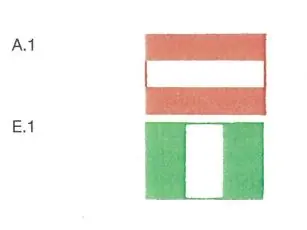

§ 6.28a Schleuseneinfahrt und -ausfahrt
Rheinschiffahrtspolizeiverordnung
1. | Die Einfahrt in die Schleuse wird bei Tag und bei Nacht durch Signallichter geregelt, die auf einer Seite oder auf beiden Seiten der Schleuse gezeigt werden. Diese Signallichter haben folgende Bedeutung: | ||
a) | Die Einfahrt in die Schleuse wird bei Tag und bei Nacht durch Signallichter geregelt, die auf einer Seite oder auf beiden Seiten der Schleuse gezeigt werden. | ||
Einfahrt verboten, Schleuse außer Betrieb; | |||
b) | ein rotes Licht oder zwei rote Lichter nebeneinander: | ||
Einfahrt verboten, Schleuse geschlossen; | |||
c) | das Erlöschen eines der beiden nebeneinander gezeigten roten Lichter oder ein rotes und ein grünes Licht nebeneinander: | ||
Einfahrt verboten, Öffnung der Schleuse wird vorbereitet; | |||
d) | ein grünes Licht oder zwei grüne Lichter nebeneinander: | ||
Einfahrt erlaubt. | |||
2. | Die Ausfahrt aus der Schleuse wird bei Nacht und bei Tag durch folgende Signallichter geregelt: | ||
a) | ein rotes Licht oder zwei rote Lichter: | ||
Ausfahrt verboten; | |||
b) | ein grünes Licht oder zwei grüne Lichter: | ||
Ausfahrt erlaubt. | |||
3. | Anstelle des roten Lichtes oder der roten Lichter nach den Nummern 1 und 2 kann das Tafelzeichen A.1 (Anlage 7), anstelle des grünen Lichtes oder der grünen Lichter nach den Nummern 1 und 2 kann das Tafelzeichen E.1 (Anlage 7) gesetzt werden. |  | |
4. | Werden keine Signallichter oder keine Tafelzeichen gezeigt, ist die Einfahrt in die Schleuse oder die Ausfahrt aus der Schleuse ohne besondere Anordnung der Schleusenaufsicht verboten. |